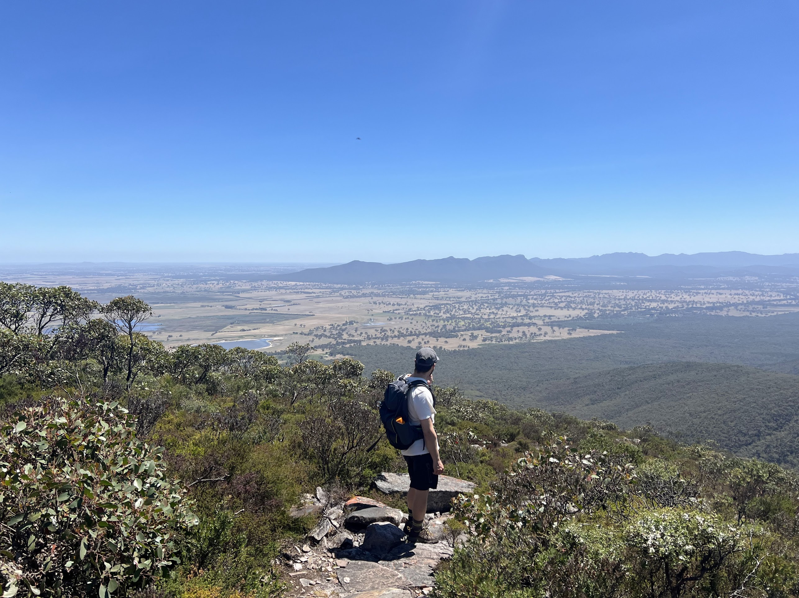
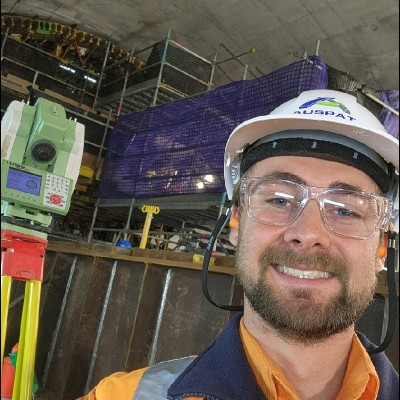
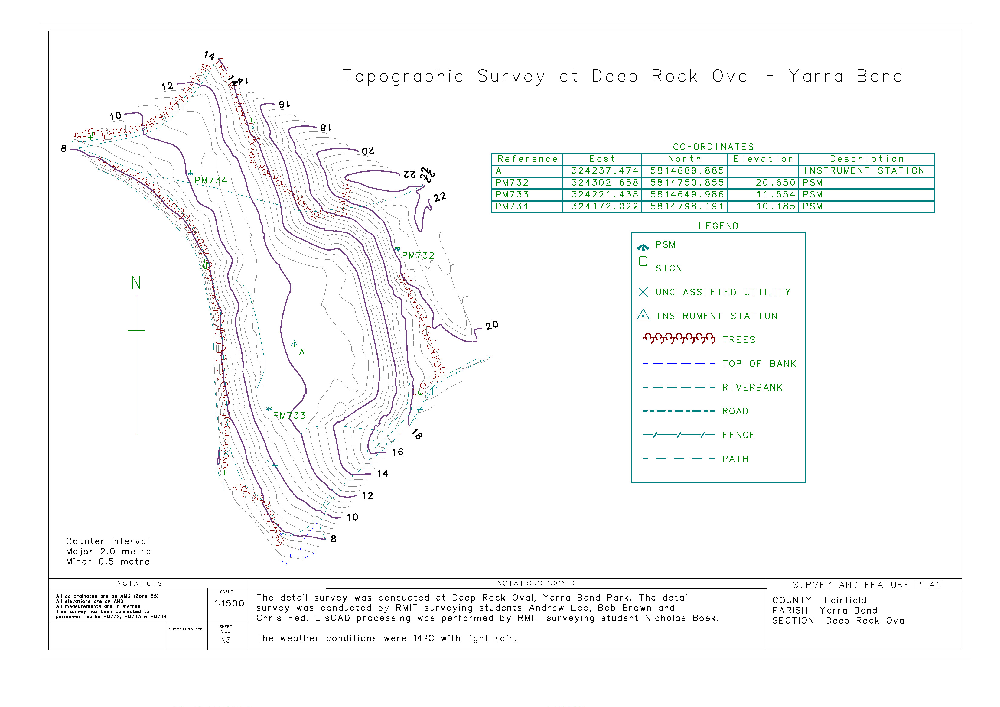
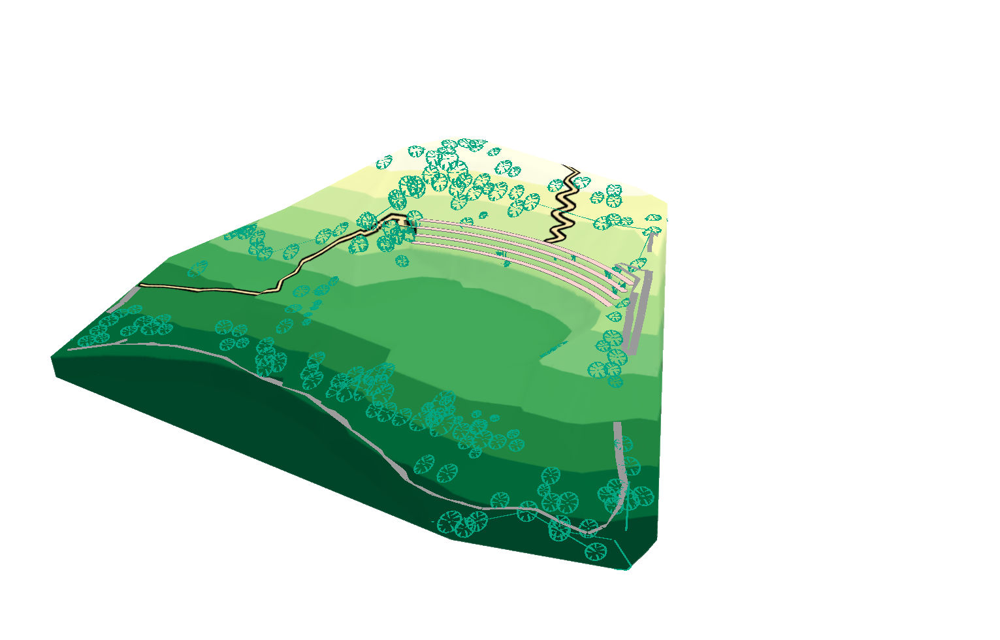
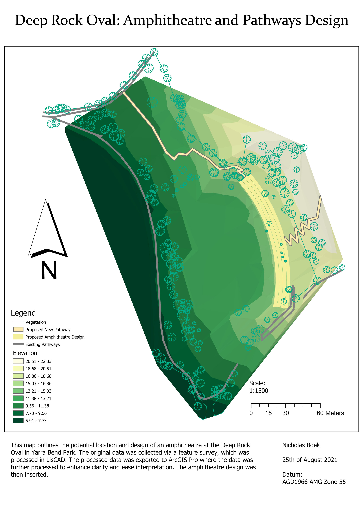
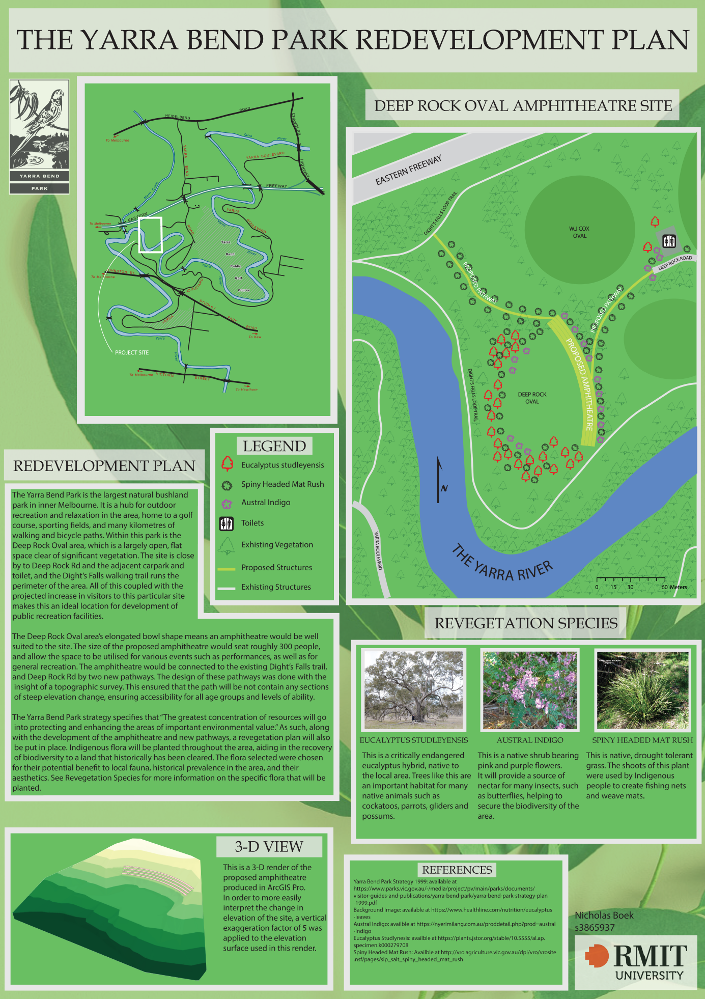
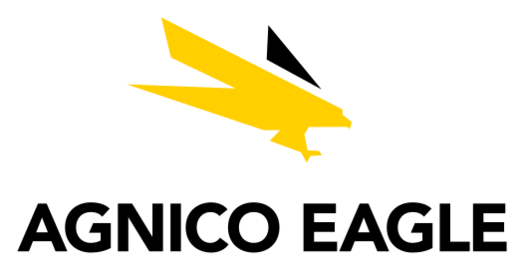
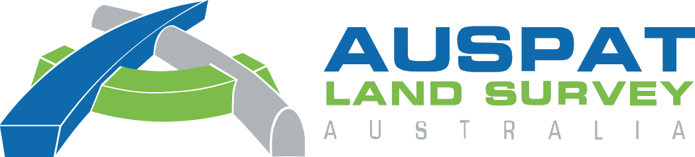

Geoportfolio
Nicholas Boek
About
This website is the geoportfolio of Nicholas Boek. The website entails
information that is academically and profesionally related to the field of Surveying.
I am a final year bachelor of applied science (surveying) (honours) student at RMIT university, currently working as a part-time engineering surveyor.
In my short career I have gained experience working on various projects, including house layouts, underground mine surveying, and tier 1 road and rail projects.
I have experience working with paper plans and manual total stations, as well as with the latest robotic Leica total stations and GNSS receivers to perform asbuilt and setout surveys.
The software I am most familiar with is 12d, but I also have experience using Captivate, AutoCAD, Trimble Business Centre, Leica Infinity and Leica Cyclone.
I am passionate about surveying, and am always looking to gain new skills and make new connections.
My own personal hobbies include enjoying the great outdoors by hiking and camping, going on runs, and travelling.

Academic Portfolio Overview
Captstone Project - Low Earth Orbit Based Positioning
My Captstone project was a comprehensive review of Low Earth Orbit (LEO) positioning. Through the completion of this project, I developed a thorough understanding
of the many different factors influencing LEO positioning, and the current state of research on this topic. The poster I presented on this topic is pictured below.
For this presentation I was awarded Most Innovative Surveying Project.
Note: If the poster display is too small, right-click the image and 'Open in new tab' to allow zooming of the map.
LEO Based Positioning: A Comprehensive Review

Applied Geospatial Techniques (AGT)
Applied Geospatial Techniques (AGT) is a unique but very practical and interesting subject done in both geospatial science and surveying. The subject uses
knowledge from three different disciplines:
- Surveying
- Geographical Information Systems (GIS)
- Cartography
For the 2021 version of the course which I completed, the assignment was about the proposal of creating an amphitheatre at Deep Rock Oval located at Yarra Bend Park.
The main deliverables of the subject consisted of producing:
- Topographic survey map of Deep Rock Oval
- 3D generated scene of the proposed amphitheatre
- Amphitheatre and Pathway plan of the proposed site
- Final map of the amphitheatre proposal
The topographic survey map was created using surveying data obtained on the field using a total station at Deep Rock Oval, Yarra Bend Park.
The topographic map was made using LISCAD.SEE and LISCAD.CAD. The 3D generated scene was created using the ArcGIS suite program ArcScene while the raw data was
modified in ArcMap. The proposed pathway was created using ArcMap by using the GIS program to generate the pathway based on slope angle and the amphitheatre
based on z-values. The final map used Adobe Illustrator to create the map along with ArcMap for exporting the 2D amphitheathre image and ArcScene for
exporting the image of the 3D scene.
Note: If map display is too small, right-click the image and 'Open in new tab' to allow zooming of the map.
Topographic survey map (Surveying component)

3D Amphitheatre and pathway plan (GIS component)


Final map of proposal(Cartography component)

Industry Experience
This page will briefly cover all my work experience within the surveying industry.
I have worked at Prime Survey as a survey assistant, Agnico Eagle as a mine surveying vacation student, and Auspat Land Survey as an engineering surveyor.
This page will outline my experience gained and an overview of my current surveying skillset.
Prime Survey
Survey Assistant
April 2021 - November 2022
At Prime Survey I worked casually as a land surveying assistant.
In this role I became proficient in using Pentax total stations and gained experience in a variety of construction setouts including houses and roads.
I developed an understanding of how to read paper plans, check for random and gross errors, and problem solve when issues are encountered on a job site.
Agnico Eagle

Mine Surveying Vacation Student
November 2022 - February 2023
At Fosterville Gold Mine I was accepted into the student vacation program run by Agnico Eagle.
In this program I worked full time for the summer of 2022-23 doing underground mine surveying.
I collaborated with a large team across many departments, which improved my professional communications skills.
Working underground taught me the importance of safety at work. It is a highly dynamic and at times hazardous environment,
necessitating the constant analysis of the safety of a task you are completing.
This experience keeps me present, focused on the task at hand, and analyzing the environment in which I am working.
I gained technical skills in operating and maintaining Leica TS-16 total stations and was exposed to LiDAR scans and photogrammetry via drone surveys.
I also gained software skills in Deswik and CloudCompare.
Auspat Land Survey

Engineering Surveyor
February 2023 - Present
Working at Auspat I have had the opportunity to gain experience working on both road and rail tier 1 constructions sites,
including the Parkdale level crossing removal, the West Gate Tunnel Project, The Metro Tunnel across multiple stations, Bridge Inn Road Upgrade, and recently the M80 Ring Road Completion.
Working on these projects has given me experience in working on highly dynamic and complex sites, where communication, planning, and problem solving is key to achieving success.
In terms of technical skills, I have gained experience in using 12d and 12d field to collect and reduce data.
This includes setout and asbuilt surveys, and producing conformance reports.
I have used the latest Leica total stations and laser scanners, as well as various GNSS receivers.
I have gained experience reducing traverse data in Starnet for the establishment and adjustment of survey control networks and I have conducted monitoring surveys on bridges and reclaimed land.
Skills and Proficiencies
|
Engineering Surveying |
|
12d Model |
 |
Cartographic Principles |
 |
Adobe Illustrator |
 |
Remote Sensing |
 |
Photogrammetry and Drone Mapping |
 |
GIS |
 |
QGIS |
Credits and Attributions
The following programming languages and software were used to create the website
- HTML
- CSS
- JavaScript
- Visual Studio Basic
The deliverables contains content from the following subjects:
- Captstone Research (Design) (GEOM2410)
- Applied Geospatial Techniques (GEOM2150)
As per the policy of using the Flaticons with a free account, the attributions and crediting of the creators of the icons are as below:
Attributions of icons used: